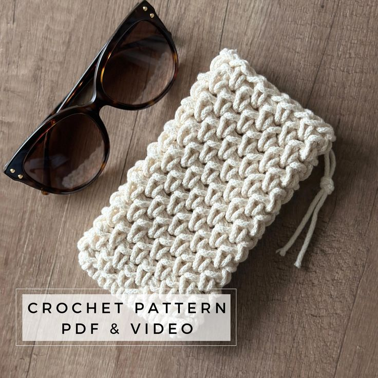
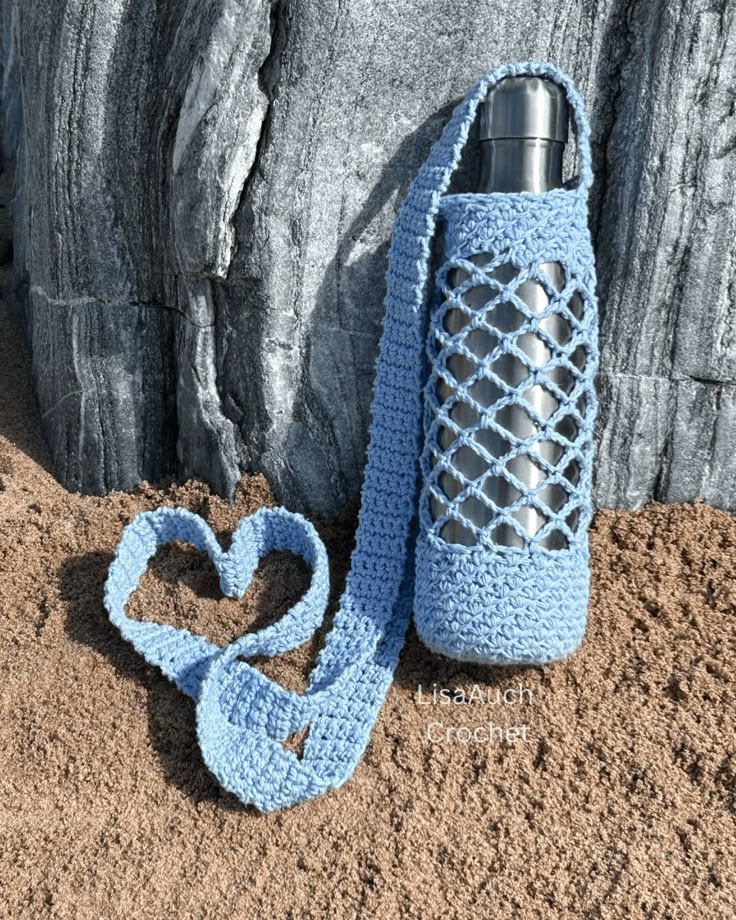
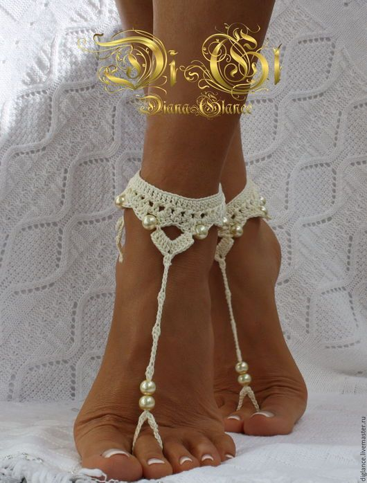
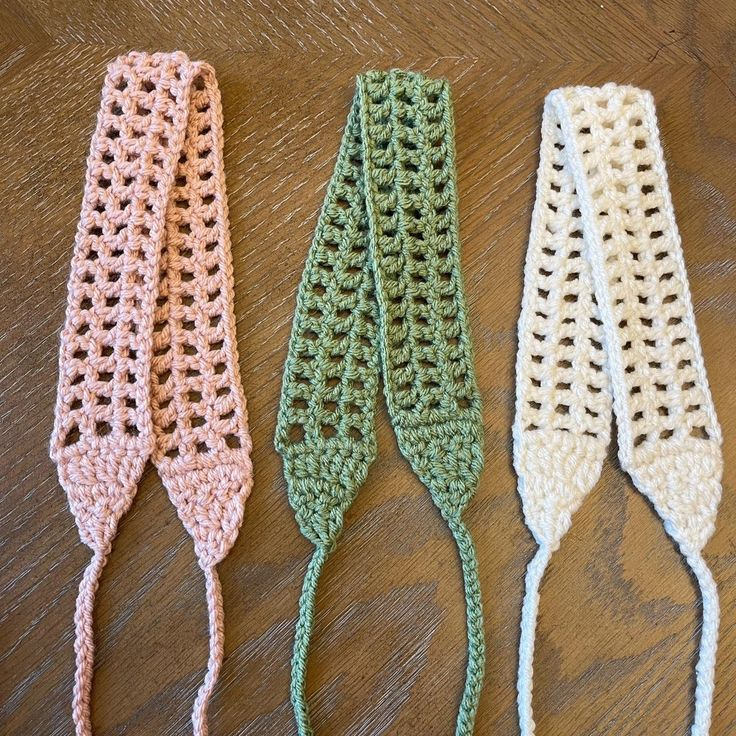
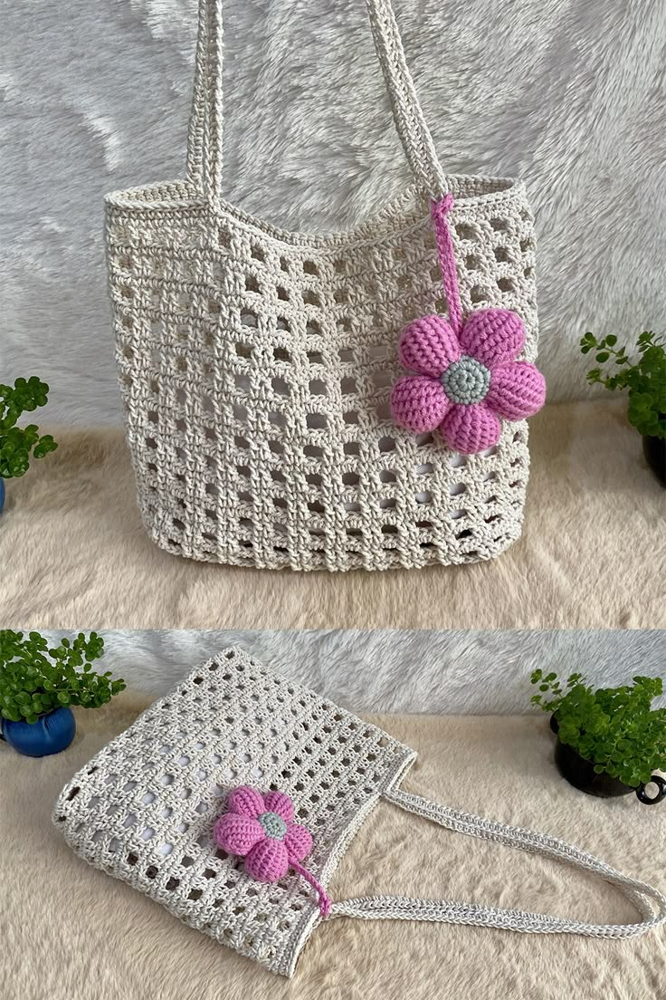
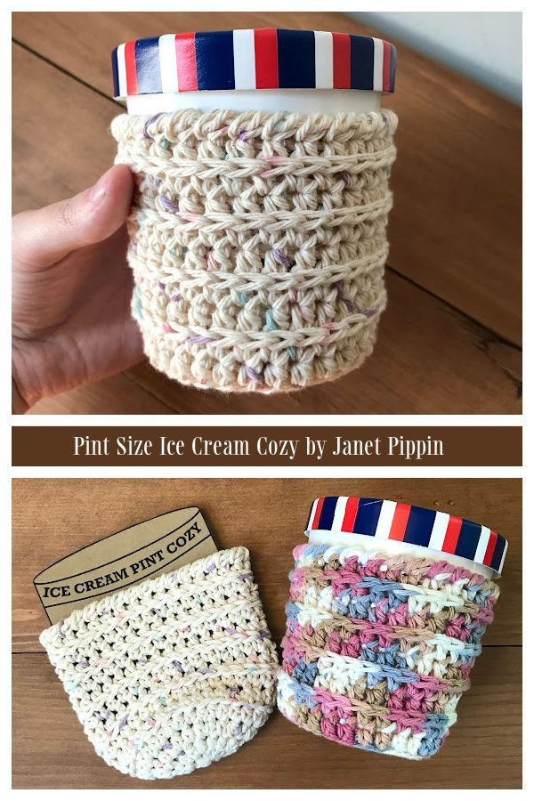
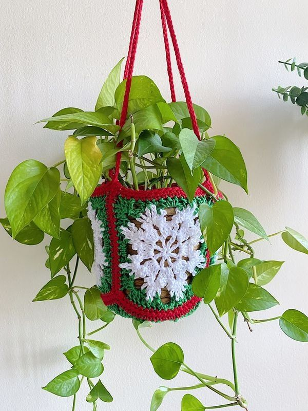
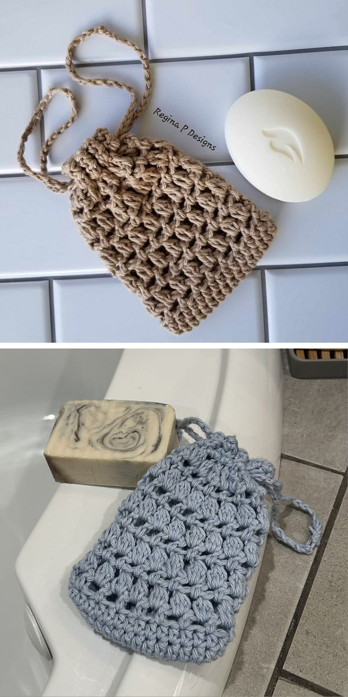
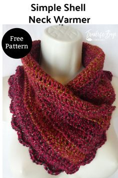

Crochet
10 Unique Everyday Items to Crochet This Summer
Author: Ladele Simi
15th July, 2025

Introduction
Summer is here-and so is your next wave of inspiration! When you think of crochet, you might picture cozy scarves and chunky blankets. But crochet isn't just for winter. In fact, it's one of the most versatile crafts for lightweight, practical, and stylish warm-weather items.
If you're looking to stay cool while your hook stays hot, this post is packed with creativity. From fashion to function, here are 10 unique everyday items to crochet this summer-perfect for gifting, selling at markets, or enjoying for yourself.

1.Crochet Sunglasses Case
Why it's great: This small but mighty project is a summer must-have. Keep your shades scratch-free with a padded, handmade case.
Best yarn: Cotton or bamboo for durability and softness
Texture tip: Use tight stitches like single crochet or thermal stitch for a thick, protective layer.

2.Reusable Water Bottle Holder
Why it's great: Stay hydrated and hands-free. This crocheted sling holds your bottle and frees up space in your beach or festival bag.
Best yarn: Cotton or recycled T-shirt yarn for strength and absorbency
Texture tip: Use mesh or net stitches to create breathability without adding bulk.

3.Crochet Barefoot Sandals
Why it's great: Perfect for beach days, yoga sessions, or bohemian bridal showers, barefoot sandals are flirty and fun.
Best yarn: Fingering-weight cotton or bamboo
Texture tip: Lace or mandala-style stitches for airy, elegant patterns

4.Lightweight Summer Headbands
Why it's great: Keep your hair off your neck in the heat with stylish crochet headbands. They're quick to make and endlessly customizable.
Best yarn: Cotton or bamboo blends
Texture tip: Use ribbing (front/back post stitches) for a stretchy fit.

5.Crochet Market Tote Bag
Why it's great: Functional, fashionable, and eco-friendly. Use this tote for shopping, beach days, or farmers' markets.
Best yarn: 100% cotton for strength and easy washing
Texture tip: Mesh, filet, or Solomon's knot patterns make it airy and expandable.

6.Crochet Ice Cream Cozy
Why it's great: Eating ice cream straight from the tub? A crochet cozy keeps your hands from freezing and your pint from melting too fast.
Best yarn: Cotton yarn for absorbency and comfort
Texture tip: Use waffle stitch or honeycomb for a fun, cushy texture.

7.Lacy Crochet Crop Tops
Why it's great: Stylish and breathable, crochet crop tops are perfect for beach days, festivals, or layering over tanks.
Best yarn: Bamboo, rayon, or soft cotton yarns
Texture tip: Try pineapple stitch, shell stitch, or open lacework.

8.Crochet Plant Hangers
Why it's great: Summer is the season of plant babies! Crochet plant hangers add a stylish, handmade touch to your indoor or balcony jungle.
Best yarn: Macrame cord, cotton rope, or jute twine
Texture tip: Use chain spaces and netting for airiness.

9.Crochet Soap Saver Pouches
Why it's great: Practical and eco-friendly. Slip your soap bar inside, lather up, and hang to dry-great for camping or travel.
Best yarn: 100% cotton or hemp
Texture tip: Mesh or half double crochet in the back loop for scrubbing action.

10.Crochet Cooling Neck Wrap
Why it's great: Stay cool during hot days or workouts. Soak in cold water and tie around your neck for instant
relief.
Best yarn: Cotton for absorbency and comfort
Texture tip: Use granny stitch, moss stitch, or tunisian simple stitch for a textured finish.
Best Yarns for Summer Crochet Projects
Cotton - Absorbent, breathable, machine washable
Bamboo - Soft, silky, lightweight
Linen - Rustic texture, gets softer with use
T-shirt Yarn - Strong, stretchy, eco-conscious
Raffia - Paper-based, stiff, natural look
Blends - Combine properties of two or more fibers
Tips for Crocheting in the Summer Heat
Use breathable yarn
Keep your hands cool
Choose small projects
Hydrate and stretch
Store your yarn properly
How to Market Summer Crochet Items
Festival-friendly accessories
Eco-swaps
Home and garden accents
Use searchable phrases like "boho crochet", "zero waste gift", and "lightweight summer accessory"
Final Thoughts
Crochet doesn't have to go into hibernation when the temperature rises. Whether you're a newbie or a seasoned stitcher, these 10 unique everyday items to crochet this summer are practical, beautiful, and refreshing to make.
FAQs
Q1: What's the best yarn for summer crochet?
Cotton, bamboo, and linen are breathable and perfect for warm weather.
Q2: Are there quick summer crochet projects?
Yes! Try sunglasses cases, soap savers, or ice cream cozies-they're fast, fun, and functional.
Q3: Can I crochet clothes in the summer?
Absolutely! Crochet crop tops, wraps, and barefoot sandals are summer fashion favorites.
Q4: How can I sell summer crochet items?
Use platforms like Etsy, Instagram, and local craft fairs. Market as eco-friendly, handmade, and lightweight.
Q5: What crochet stitches are good for summer?
Use mesh, granny, lace, or moss stitch for open, breathable textures.